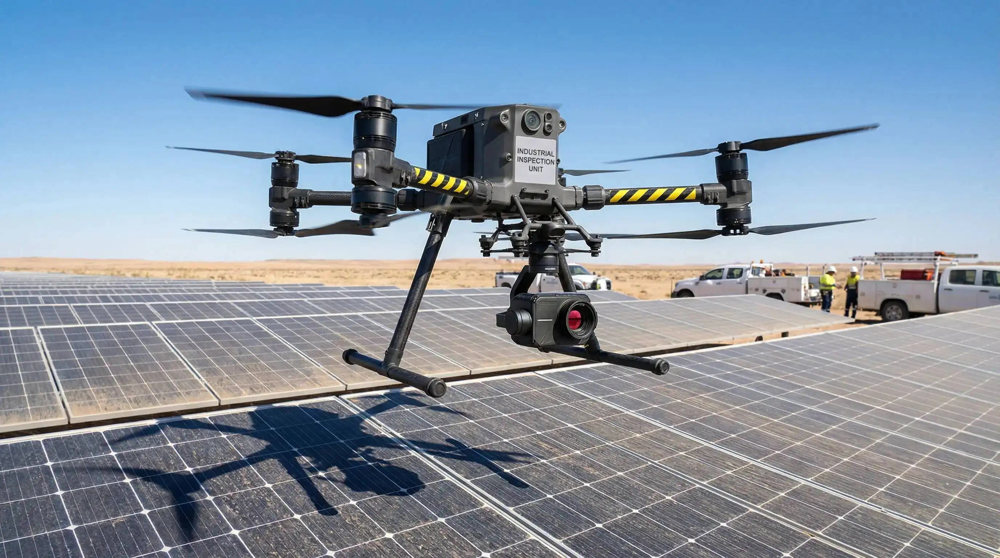

Inspektion & Thermografie
Gebäude, Anlagen und Infrastruktur sicher und effizient inspizieren — ohne Gerüst, ohne Risiko.
Intelligente Inspektion aus der Luft
Herkömmliche Inspektionen erfordern Gerüste, Hubarbeitsbühnen oder Kletterer — teuer, zeitaufwändig und riskant. Drohnen-Inspektionen revolutionieren diesen Prozess: In wenigen Stunden erfassen wir jedes Detail eines Gebäudes oder einer Anlage.
Unsere Inspektionsdrohnen sind mit hochauflösenden Zoom-Kameras und radiometrischen Wärmebildsensoren ausgestattet. So erkennen wir nicht nur sichtbare Schäden, sondern auch verborgene Mängel wie Wärmebrücken, defekte Solarmodule oder Feuchtigkeitseintritte — unsichtbar für das bloße Auge.
Radiometrische Thermografie
Temperaturgenau auf 0,1°C — erkennt Wärmelecks, defekte Module, Kurzschlüsse.
200x Zoom
Kleinste Risse, Korrosion und Verschleiß aus sicherer Entfernung dokumentieren.
Detaillierter Report
Professioneller Inspektionsbericht mit Fotos, Analyse und Handlungsempfehlungen.
100% Sicher
Kein Gerüst, keine Kletterer. Inspektion ohne Risiko für Personal und Gebäude.
Was wir inspizieren
Solaranlagen
Defekte Zellen, Hotspots und Mikrorisse in Photovoltaik-Anlagen in einem Bruchteil der Zeit herkömmlicher Methoden identifizieren.
Dächer & Fassaden
Ziegel, Dichtungen, Rinnen, Fassadenelemente — lückenlose Dokumentation ohne Betreten des Dachs.
Windkraftanlagen
Rotorblatt-Inspektionen an Windrädern bis zu 200m Höhe. Erkennung von Erosion, Rissen und Blitzschäden.
Industrieanlagen
Rohrleitungen, Kamine, Kühltürme und Lagerhallen — regelmäßige Zustandsüberwachung aus der Luft.
Brücken & Infrastruktur
Hochauflösende Dokumentation von Brücken, Masten, Türmen und Bauwerken für Zustandsbewertungen.
Energieeffizienz
Thermografie-Analyse ganzer Wohngebiete zur Identifikation von Wärmeverlusten und energetischen Schwachstellen.